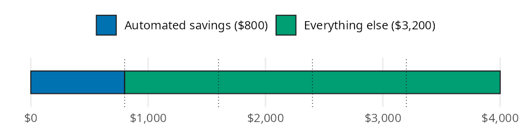

automated = monthly_savings(gross_monthly_income=4000, savings_rate=0.20)
automated800.0Once you know your savings rate and where the money will live, how much should leave each paycheck automatically? The Automating Savings chapter of the book argues for paying yourself first: savings move out before you see them, so saving no longer depends on willpower. In this page I’ll answer the “how much” question with monthly_savings(), using the chapter’s $4,000 gross monthly pay so you can check every result against the book. Then we’ll borrow functions from other chapters to follow the automated money into an emergency fund and an investment account.
monthly_savings() follows the conventions on the Get started page. Note the units: its savings_rate argument is a decimal (0.20), while the savings_rate() function from Savings Strategies returns a percent (20.0).
| Function | Returns | Units |
|---|---|---|
| monthly_savings() | the monthly amount to pay yourself first | dollars per month (savings_rate is a decimal) |
The chapter’s example earns $48,000 a year, or $4,000 a month before taxes, and aims for a 20% savings rate. The rate is measured on gross pay here because 401(k) contributions come out before taxes.
Picture the gross paycheck as one bar cut into five equal fifths. One fifth goes to savings before you ever see it, and the rest is what you live on:

Taking one fifth of the bar is the same as multiplying it by 0.20, which is what monthly_savings() does:
The paycheck sends $800 a month to savings, which leaves $3,200 for taxes and everything else.
In practice the 20% goes to several places at once. The chapter splits it into an emergency fund, a 401(k) contribution large enough to get a typical employer match, and sinking funds (money set aside each month for a known future bill). savings_rate accepts an array, so one call prices every destination:
split = pl.DataFrame({
"destination": ["emergency fund", "401(k) match", "sinking funds"],
"rate": [0.10, 0.05, 0.05],
})
split = split.with_columns(
amount=monthly_savings(gross_monthly_income=4000, savings_rate=split["rate"]),
)
split| destination | rate | amount |
|---|---|---|
| str | f64 | f64 |
| "emergency fund" | 0.1 | 400.0 |
| "401(k) match" | 0.05 | 200.0 |
| "sinking funds" | 0.05 | 200.0 |
The three amounts add up to $800, the same 20% from the bar model. Payroll takes the 401(k) share before taxes, so the direct deposit split only needs to send the other $600 to the HYSA.
The chapter’s long game is escalation: raise the savings rate with each raise instead of cutting spending. Its timeline pairs a growing salary with a rate that climbs five points every two years. Dividing each salary by 12 gives the monthly income, and arrays in both arguments price every year at once. future_value_series() from Investing Basics then shows what 30 years of each monthly amount could grow to at 7% (rate is per month here, so the yearly return is divided by 12):
salary = [50000, 54000, 58000, 63000]
rate = [0.15, 0.20, 0.25, 0.30]
monthly = monthly_savings(gross_monthly_income=[s / 12 for s in salary], savings_rate=rate)
pl.DataFrame({
"year": [1, 3, 5, 7],
"salary": salary,
"rate": rate,
"monthly": monthly.round(2),
"after_30_years": future_value_series(contribution=monthly, rate=0.07 / 12, periods=30 * 12).round().astype(int),
})| year | salary | rate | monthly | after_30_years |
|---|---|---|---|---|
| i64 | i64 | f64 | f64 | i64 |
| 1 | 50000 | 0.15 | 625.0 | 762482 |
| 3 | 54000 | 0.2 | 900.0 | 1097974 |
| 5 | 58000 | 0.25 | 1208.33 | 1474132 |
| 7 | 63000 | 0.3 | 1575.0 | 1921454 |
The monthly amounts match the chapter’s $625, $900, $1,208, and $1,575, and the 30 year values match its $762k to $1.92M range. Most of that jump is paid for by raises, not by spending less.
monthly_savings() is a single multiplication, so it leaves a few things to you:
20 instead of 0.20 returns $80,000, not $800, and no error is raised.Back to the $4,000 paycheck. The emergency fund line gets $400 a month until the fund is full. The Emergency Fund chapter’s first job has $2,400 a month in essential expenses, a four month target, and $1,200 already saved. emergency_fund_target() and months_to_ef_goal() show how long the automation takes to finish the job:
ef_monthly = monthly_savings(gross_monthly_income=4000, savings_rate=0.10)
ef_target = emergency_fund_target(monthly_expenses=2400, months=4)
ef_months = months_to_ef_goal(
target=ef_target, current_balance=1200, monthly_contribution=ef_monthly
)
ef_target, ef_months(9600.0, 21)The $9,600 fund is full in 21 months without a single decision along the way. Once it’s full, the chapter sends the $400 to investing instead. future_value_series() shows what that redirected transfer could become over 30 years at 7%:
redirected = future_value_series(contribution=ef_monthly, rate=0.07 / 12, periods=30 * 12)
redirected487988.39831037784The same $400 transfer could grow to about $487,988. As a last check, percent_of_income() from Budgeting turns the automated dollars back into a rate. It returns a percent, the reverse of the decimal monthly_savings() takes:
Automation makes saving the default instead of a monthly decision. monthly_savings() turns a savings rate into the dollar amount to automate, and its array inputs price a split across accounts or a whole escalation plan in one call. Paired with the emergency fund and investing functions, it shows where those automated dollars end up.